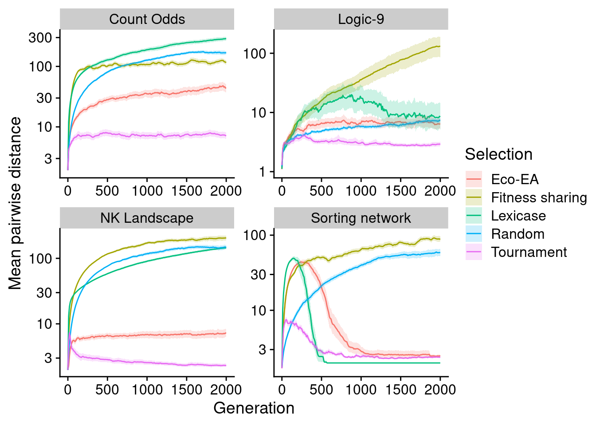
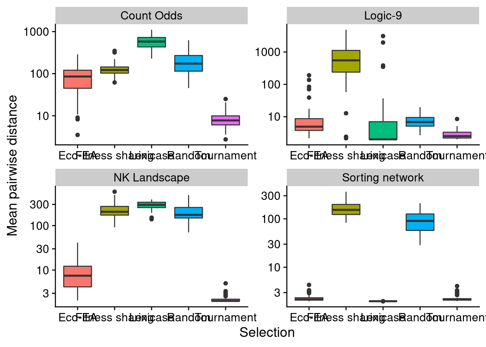

Chapter 5 Phylogenetic diversity
5.1 Over time
ggplot(
data,
aes(
x=generation,
y=mean_phenotype_pairwise_distance,
color=selection_name,
fill=selection_name
)
) +
stat_summary(geom="line", fun=mean) +
stat_summary(
geom="ribbon",
fun.data="mean_cl_boot",
fun.args=list(conf.int=0.95),
alpha=0.2,
linetype=0
) +
scale_y_log10(
name="Mean pairwise distance"
) +
scale_x_continuous(
name="Generation"
) +
scale_color_discrete("Selection") +
scale_fill_discrete("Selection") +
facet_wrap(~problem_name, scales = "free")
5.2 Final
# Compute manual labels for geom_signif
stat.test <- final_data %>%
wilcox_test(mean_phenotype_pairwise_distance ~ selection_name) %>%
adjust_pvalue(method = "bonferroni") %>%
add_significance() %>%
add_xy_position(x="selection_name",step.increase=1)
#stat.test$manual_position <- stat.test$y.position * .5
#stat.test$manual_position <- c(110, 150, 170, 170, 130, 110)
stat.test$label <- mapply(p_label,stat.test$p.adj)ggplot(
final_data,
aes(
x=selection_name,
y=mean_phenotype_pairwise_distance,
fill=selection_name
)
) +
geom_boxplot() +
scale_y_log10(
name="Mean pairwise distance"
) +
scale_x_discrete(
name="Selection"
) +
scale_fill_discrete(
name="Selection"
) +
scale_color_discrete(
name="Selection"
) +
theme(legend.position = "none") +
facet_wrap(~problem_name, scales = "free")
stat.test %>%
kbl() %>%
kable_styling(
bootstrap_options = c(
"striped",
"hover",
"condensed",
"responsive"
)
) %>%
scroll_box(width="600px")| .y. | group1 | group2 | n1 | n2 | statistic | p | p.adj | p.adj.signif | y.position | groups | xmin | xmax | label |
|---|---|---|---|---|---|---|---|---|---|---|---|---|---|
| mean_phenotype_pairwise_distance | Eco-EA | Fitness sharing | 240 | 240 | 2831.0 | 0.00e+00 | 0.000000 | **** | 9718.758 | Eco-EA , Fitness sharing | 1 | 2 | p < 1e-04 |
| mean_phenotype_pairwise_distance | Eco-EA | Lexicase | 240 | 240 | 25159.0 | 1.70e-02 | 0.170000 | ns | 15104.178 | Eco-EA , Lexicase | 1 | 3 | p = 0.17 |
| mean_phenotype_pairwise_distance | Eco-EA | Random | 240 | 240 | 9552.0 | 0.00e+00 | 0.000000 | **** | 20489.598 | Eco-EA, Random | 1 | 4 | p < 1e-04 |
| mean_phenotype_pairwise_distance | Eco-EA | Tournament | 240 | 240 | 43052.5 | 0.00e+00 | 0.000000 | **** | 25875.018 | Eco-EA , Tournament | 1 | 5 | p < 1e-04 |
| mean_phenotype_pairwise_distance | Fitness sharing | Lexicase | 240 | 240 | 33683.0 | 1.00e-03 | 0.010000 | ** | 31260.438 | Fitness sharing, Lexicase | 2 | 3 | p = 0.01 |
| mean_phenotype_pairwise_distance | Fitness sharing | Random | 240 | 240 | 40738.0 | 0.00e+00 | 0.000000 | **** | 36645.858 | Fitness sharing, Random | 2 | 4 | p < 1e-04 |
| mean_phenotype_pairwise_distance | Fitness sharing | Tournament | 240 | 240 | 57314.0 | 0.00e+00 | 0.000000 | **** | 42031.278 | Fitness sharing, Tournament | 2 | 5 | p < 1e-04 |
| mean_phenotype_pairwise_distance | Lexicase | Random | 240 | 240 | 28272.0 | 8.49e-01 | 1.000000 | ns | 47416.698 | Lexicase, Random | 3 | 4 | p = 1 |
| mean_phenotype_pairwise_distance | Lexicase | Tournament | 240 | 240 | 34801.0 | 7.84e-05 | 0.000784 | *** | 52802.118 | Lexicase , Tournament | 3 | 5 | p = 0.000784 |
| mean_phenotype_pairwise_distance | Random | Tournament | 240 | 240 | 54927.0 | 0.00e+00 | 0.000000 | **** | 58187.538 | Random , Tournament | 4 | 5 | p < 1e-04 |